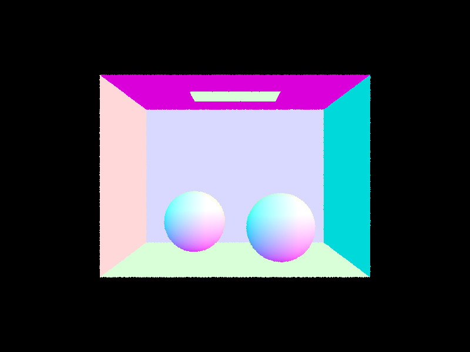
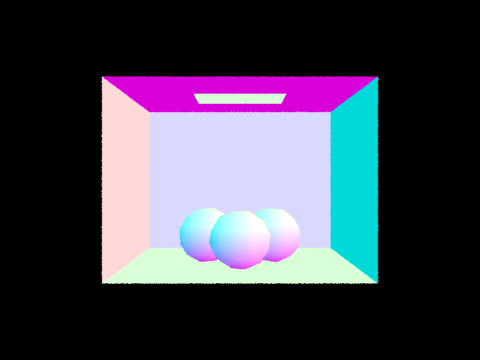
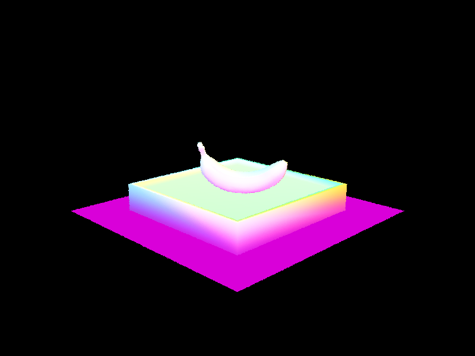

CS184/284A Spring 2025 Homework 3 Write-Up
Link to webpage: Click here! Link to GitHub repository: Our Repo!

Overview
Give a high-level overview of what you implemented in this homework. Think about what you've built as a whole. Share your thoughts on what interesting things you've learned from completing the homework.Part 1: Ray Generation and Scene Intersection
What is ray generation?In the start we are given a point on an image sensor. We then have to translate it from the camera space (the image sensor) into the real world. This means a whole log of linear transformations. If you don't want to know the math you can skip this part, but in case you were curious:
- We first converted degrees to radians using the formula \( \text{radians} = \text{degrees} \times \frac{\pi}{180} \).
- We shifted the frame to move the center from the original to the real world. This involved translating (0,0) from the bottom-left corner to the center of the frame.
- We can represent the 3D vector as \( \mathbf{v} = (x, y, -1) \), where \( x \) and \( y \) are the coordinates on the image sensor, and \(-1\) is the z-coordinate of the camera sensor.
- Lastly we multiply these by the screen dimensions and normalize to get the unit vector.

To understand how we created the pixel level intersections. It is great to first review Monte Carlo Integrations here. But in short it integrates samples and averages them to approximate the area under the curve.

Monte Carlo is a great way to estimate a area (in our case a pixel's color) given a limited number of sampling allowed to improve runtime of an algorithm. This means that we took a fixed amount of random samples from the image sensor within a pixel and then generated a ray and estimated its illuminance. We then integrated over all samples (it was just summing up all the illuminance to be honest) and divided by the number of samples we had to obtain a rough average over the entire pixel. This feels familiar to supersampling except not every pixel is sampled since ray generation and illuminance estimation is much more costly than just retrieving a value of a pixel.
How does triangle intersection work?
The Möller–Trumbore algorithm is a fast and efficient method for detecting ray-triangle intersections in 3D space, commonly used in ray tracing. This approach leverages barycentric coordinates and Cramer's rule to solve for the intersection point without explicitly computing the triangle’s normal. First, the algorithm calculates two edge vectors and uses the ray direction to determine whether the ray is parallel to the triangle’s plane. If not, it computes the intersection’s barycentric coordinates (u,v), which confirm whether the point lies inside the triangle. The final step determines the intersection distance t, ensuring it falls within the valid ray range. If an intersection is found, additional data such as the interpolated normal is stored for accurate shading.
Here are some of the simple renderings from small dae files to show that our primitive ray tracing and intersections work
|
|

|
|

|

|
Part 2: Bounding Volume Hierarchy
How does our BVH construction algorithm work?Bounding Box Hiearchies are created by recursively splitting the scene up into left and right bounding boxes until each box has less than max_leaf_size number of primitives. Then using our newly created box hiearchy, we can backtrace a ray along these boxes and check in a log n number of boxes by determining if it is on the right or the left of our center. Now comes the question of how did we choose our center?
What heuristic was used?The heuristic was the midpoint of the axis with the longest extent. This would try to make sure that we were choosing an axis that would be able to narrow down the most amount of objects based on the assumption that they are sized evenly. It may also be true that everything is on one side of an axis and this would lead to an infinite loop. This is because we would never be able to separate the objects since we would continue to choose all of them each time. In order to prevent this, our backup heuristic was just to take half of the objects on a given axis.
BVH Acceleration on objects:BVH Acceleration speeds up the time to render bigger models. Nothing took more than 0.1 seconds to render

All of the above rendering times improved significantly, even this is an understatement. This is because we went from n to log n time for each of the path traces and with significant amounts of triangles this can be very significant improvement. For example with the cow: It went from 38.65s to 0.0625 seconds. This is a 618 fold improvement! Holy cow!

Part 3: Direct Illumination
Before we get into the nitty gritties of illumination we first have to understand the Bidirectional Reflection Distribution Function/p> The Bidirectional Reflectance Distribution Function (BRDF) is a fancy way of describing how light bounces off a surface. Imagine shining a flashlight on a table—some of the light reflects into your eyes, some scatters in other directions. BRDF tells us how much light reflects in different directions depending on where the light comes from and the surface’s properties. In my opinion, this equation should just be called snell's reflection law but it wasn't up to me. It depends on two things:
- Incoming angle: w_0
- Outgoing angle: w_1
Now that we've know how these functions work, let's move on to our two illumination methods:
In part 3 we implemented two different types of direct illumination:
1. Uniform Hemisphere Sampling
The first approach uses uniform hemisphere sampling to estimate direct lighting. This method works by:
- Randomly sampling directions uniformly across the hemisphere above the surface point
- Casting rays in these directions to check if they hit light sources
- Accumulating the contribution of light sources hit by these rays
This method has the advantage of being simple to implement, but it can be inefficient because many sampled directions may not hit any light sources, especially when lights are small or far away.
2. Direct Sampling from Light Source
The second approach directly samples the light sources, which is more efficient:
- For each light in the scene, generate sample points on the light
- Cast rays from the surface point to these sample points
- Check if the rays are blocked (shadow rays)
- Accumulate the contribution of unblocked light samples
This method is more efficient, especially for scenes with small or distant lights, because it focuses samples where they matter most. Below are some light sampling images rendered with different numbers of rays sampled.
Light Ray Sample Comparison
|
|
|
|
|
|
Comparing Sampling Methods
|
|
|
|
|
|
Analysis
Comparing the two sampling methods reveals several key differences: Firstly the noise levels of uniform hemisphere sampling produces noisier images when given the same sampling rates. This is due to the wasted samples on the non-light directions. Secondly, the soft shadows appear grainier with hemisphere sampling but smoother with light sampling. Lastly, with the same number of rays, light sampling appears to render an image much closer to reality and thus we can approximate that light importance sampling achieves cleaner results with fewer samples. All in all, light importance sampling proves to be superior for efficient path tracing and should be a prioritized method in ray calculations.
Part 4: Global Illumination
To implement the indirect lighting function, we needed to split our at_least_one_bounce_radiance function into separate difference configurations for when we are accumulating bounces and when we aren't. Additionally, for when we are at a max_depth_ray of 0, we needed to output only the light emission within the est_radiance_global_illumination() function and otherwise sum the zero_bounce_radiance() with the at_least_one_bounce_radiance(). For our at_least_one_bounce_radiance() function more specifically, our implementation is as follows:
- We set L_out equal to one_bounce_radiance() for the given ray and intersection in the function so we can get the direct lighting source.
- We want to terminate when our given ray's depth is less than or equal to one and then subsequently return our total light collected.
- From our intersection point, we want to also create a new ray which generates this bouncing effect by taking a sample from the surface BSDF using our isect.bdsf->sample_f() function. With the given outward radiance w_out, we get the sampled w_in and pdf of the probability density function at w_in. Using this, we can generate our new ray using our hit point at the origin hit_p, the normalized product of w_in and o2w, and the offset EPS_F with a decrementing depth by 1 for each recursive step.
- Our new ray must then be tested if it intersects our scene. If so, then we can calculate the bsdf, use the costheta angle, and recurse!
Our Indirect Lighting Function Implementation w/ isAccumBounces
In our implementation of with isAccumBounces, we wanted to ensure that we accumulated each of the lightbounces from the max_ray_depth to 1. In order to do so, we only wanted to do this when isAccumBounces was true. Otherwise, we only want to return the bounce when r.depth was equivalent to max_ray_depth and ignore every other bounce.Our Indirect Lighting Function Implementation w/ Russian Roulette
Direct vs. Indirect Illumination
For direct illuminance, we notice that there is a stark contrast between each of the surfaces due to the light emission coming from the top lighting source in the ceiling. However, we notice in the indirect illuminance that we can see the illuminance and color bleeding occuring within each surface from the walls. Only seeing these difference do we notice how combining these two illumination values can we have a more realistic form of illumination like global illuminance. Therefore, the differences are when we are adding each accumulation and one_bounce_radiance() into our L_out.
Different mth Bounces of Light w/ isAccumBounces = false
From these images we can notice how, in m = 2, it is the first indication of when indirect illuminance is prevalent. The light is now bounces across the different walls in order to gain light from the other surfaces rather than any additional accumulating light. Furthermore, we notice how color bleeding occurs across the bunny and the other floors and walls as a result of this effect.
When m = 3, the image starts to become darker as more light attempts to be accumulated from the current sources available. Due to no additional accumulated light being carried, however, it becomes more difficult to find radiance, which is why we notice a darker scene with shadowed areas.
As the m begins to increase, we can see that the lighting becomes more even along the surface. Therefore, the effect seems to work but with less light sources and more shadows existing within the scene. However, the lower m depths have a more distinct effect (m = 0 only has light emission, m = 1 has direct illumination).
Different mth Bounces of Light w/ isAccumBounces = true
- m = 0: no drastic difference due to only measuring light emission.
- m = 1: no drastic difference due to only measuring the direct illuminance of the scene with one_bounce_radiance().
- Within m = 2 to m = 5 due we notice how the accumulated bounces allow for a more illuminated scene with realistic lighting effects. When we remove accumulation, we see these lighting effects because the lighting becomes more spread out across the scene despite having less light for the image to be visible. Additionally, as bounces increase, we notice how there is more similarities to lower depths such as m = 4 and m = 5 for both when isAccumBounces is false and true. This shows how large amounts light bounces are not necessary to make a scene's illuminance look realistic.
Different mth Bounces of Light w/ Russian Roulette
Different Sample per Pixel Rates

These images represent how the sample per pixel rate affects the quality of the image that is outputted after rendering. With a lower sample per pixel rate, the scene becomes more grainy and the shapes become less noticable due to this impact on the render. However, in the 1024 samples per pixel image, the scene becomes more smooth and high-quality in comparison. While the higher samples per pixel cause the render time to be more lengthy, it allows for a quality image that more accurately represents the image being rendered. If you want a balance of having a smooth but also less costly render, having samples per pixel in-between these values such as 16 or 64 always for a slightly noisy but realistic image.
Part 5: Adaptive Sampling
In our adaptive sampling implementation, we utilized the technique to adjust the number of samples per pixel based on the variance values within our scene's illumination. To do so, we focused on getting samples from more noisy areas with higher variance and stop otherwise. This allows for a higher effiency with our scene generation.
To do so, we accumulated the illuminance in each iteration of our sample along with the squared illuminance. if we have reached a level in the samplesPerBatch value, we want to then calculate the mean, variance, and standard deviation in order to calculate the convergence of the samples. If our I is less than maxTolerance * mean, then we break from our iteration since the samples have already converged. We can then track the number of samples we did use in our scene more accurately and output our image. This allows for an increase in efficiency of our render and using less samples and ray accumulation than necessary in the build.